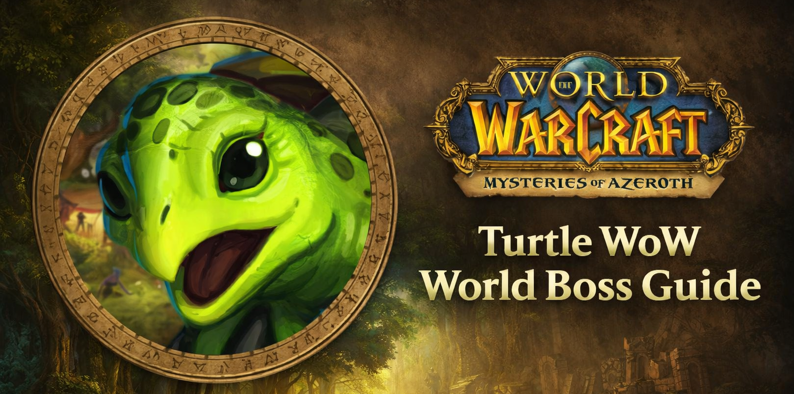
There are thirteen world bosses in Turtle WoW, with respawn timers ranging from days to weeks after being killed.
Each boss is assigned a comparative difficulty rating and a recommended number of people. With that said, none of these bosses are as difficult as most raid bosses and can afford some leeway in terms of gearing and numbers.
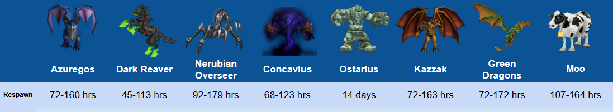
Summoning World Bosses
As of Patch 1.18, world bosses can be summoned at will by completing a repeatable quest (with the exception of Moo and Ostarius who remain unchanged). The quest is unique for each boss, but each requires obtaining an item from a raid. Further details are below each boss section.
| Boss | Summoning Item | Drops From |
|---|---|---|
| Azuregos | Rite of Resurrection | Majordomo Executus (Molten Core) |
| Cla’ckora | Ancient Idol of Cla’ckora | Fishing |
| Concavius | Bursting Mana Shard | Moam (AQ20) |
| Dark Reaver of Karazhan | Lord Blackwald II's Riding Whistle | Lord Blackwald II (Karazhan 10) |
| Dragons of Nightmare | Wail of Ysera | Favor of Erennius (Emerald Sanctum Hard Mode) |
| Nerubian Overseer | Crypt Lord's Beckoning | Anub'Rekhan (Naxxramas) |
| Lord Kazzak | Twisting Rift Crystal | Majordomo Executus (Molten Core) |
| Ostarius | Questline | |
| Father Lycan | Questline | |
| Moo | ??? | ??? |
Loot Lockout: Once you have killed a boss, you cannot receive loot from that boss until after the weekly reset. You can assist with the kill and your presence won't affect the loot for others, so long as you are not the master looter. This addon helps track it.
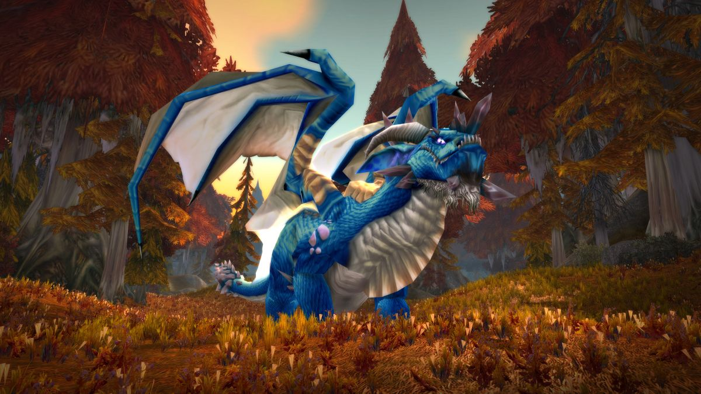
Azuregos
Azuregos spawns in Azshara. You are in the right place when you can see the Spirit of Azuregos, which follows the same path as the boss. This is a straightforward encounter with light movement and periodic threat resets. The fight is forgiving as long as positioning remains clean and casters respect the spell reflection.
Azuregos Abilities
- Cleave and Frost Breath: Frontal attacks lethal to non-tanks. Azuregos must always face away from the raid.
 Manastorm: Blizzard-like AoE that drains mana. Move out immediately.
Manastorm: Blizzard-like AoE that drains mana. Move out immediately.- Magic Reflection: Periodic spell reflect buff. All casters pause DPS when active.
- Teleport: Brings entire raid to his location and resets threat.
Strategy
Everyone stacks in melee range at his side throughout the fight, moving together to avoid Manastorm. After teleports, tanks must quickly regain threat and reposition Azuregos away from the raid to avoid Cleave/Breath. Watch for Magic Reflection buff and immediately stop casting to avoid reflection damage.
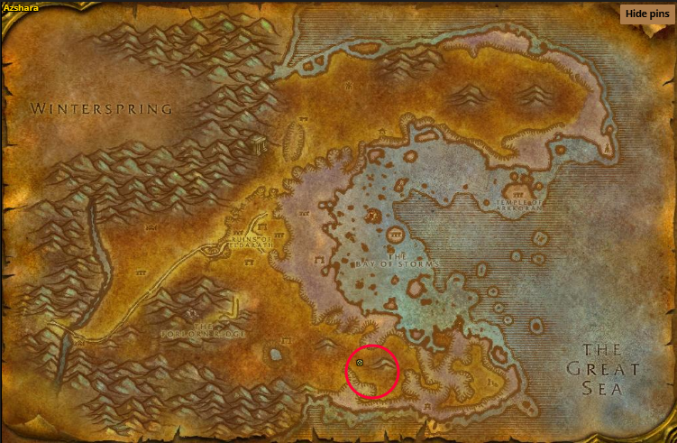
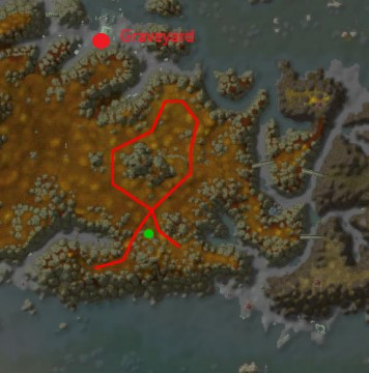
Summoning Azuregos
- Loot the Rite of Resurrection from Majordomo Executus’s chest in Molten Core.
- Get 10x Blue Dragon Essence from blue dragons in Winterspring, Azshara, or Moonwhisper Coast.
- Hand in the quest to the Spirit of Azuregos in Azshara.
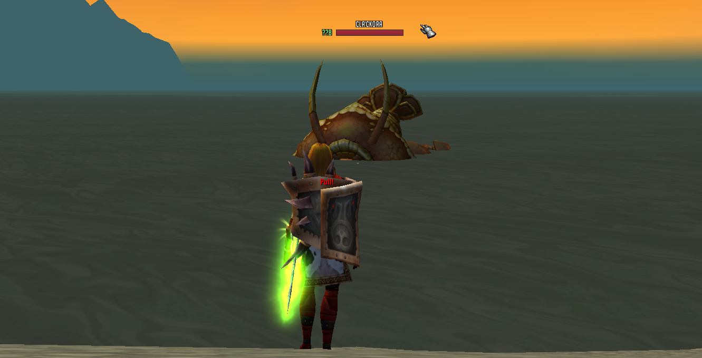
Cla’ckora
Cla’ckora is summoned at a beach altar in northern Azshara. Summoning it requires collecting three pieces of an Ancient Idol through a questline involving fishing. The boss stays summoned for 30 minutes before despawning.
Cla’ckora Abilities
- Frost Volley: High damage AoE frost spell (can be stunned but not interrupted).
 Frost Nova: Freezes nearby units in place for 10 seconds.
Frost Nova: Freezes nearby units in place for 10 seconds.- Void Zone: Drops a black area on the ground that deals damage. Move the boss out of it.
- Adds: Periodically summons two healing adds (PRIORITY targets).
Strategy
A stun rotation on Frost Volley is critical. Immediately kill adds when they spawn as they heal the boss significantly. Move the boss out of void zones.
Summoning Cla’ckora
Prerequisites:
- 395 Fishing (buffed)
- 5× Lightning Eels
- 10× Elemental Water
Top Piece of an Ancient Idol
- Speak with Inunquaq the Tuskarr in Darkshore.
- Complete Crawling for Meat by killing nearby crabs.
- Accept The Northeast Passage and take the boat to Icepoint Rock
- Fish until you find a Glowing Arctic Grayling
- Open the fish to get the Top Piece of an Ancient Idol
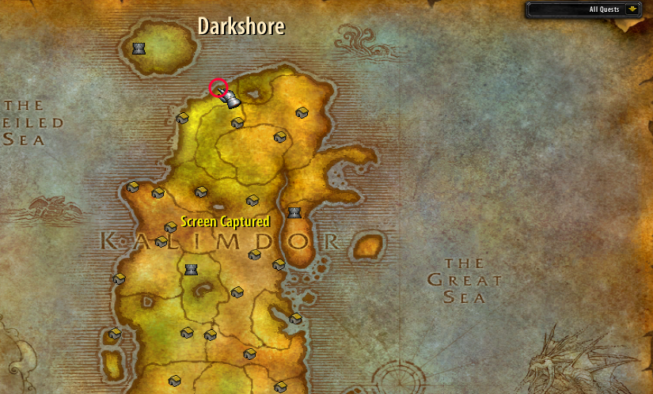
Middle Piece of an Ancient Idol
This piece drops from Ghaz’ranka, the fishing boss in Zul’Gurub. The Idol has a roughly 35% chance to drop.
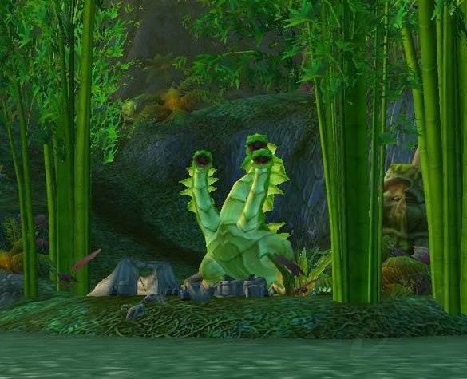
Bottom Piece of an Ancient Idol
- Fish in Tel’Abim in the area shown (left map) until you find a Barnacle Covered Key. You can hold multiple keys.
- Enter the gorilla cave (right map). Hug the right wall without dropping to the lower level. Loot the Mosscovered Chest and complete A Mossy Mystery which rewards the Bottom Piece of an Ancient Idol.
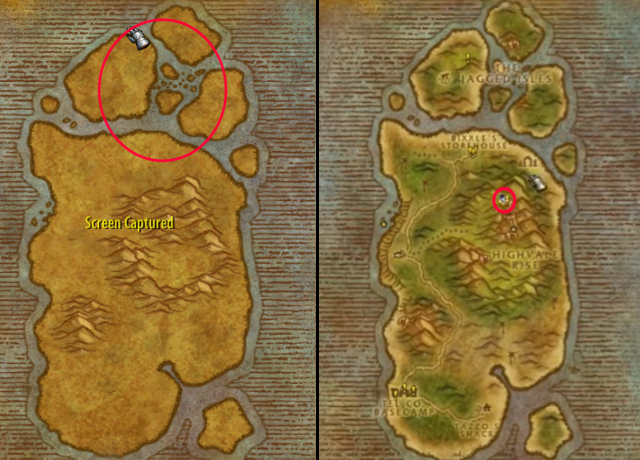
Summoning Cla’ckora
- Travel to the beach altar in Azshara marked on the map.
- Combine the three pieces into the Ancient Idol of Cla’ckora.
- Complete the quest Altar of an Ancient Evil with the idol, 5 Lightning Eels, and 10 Elemental Water.
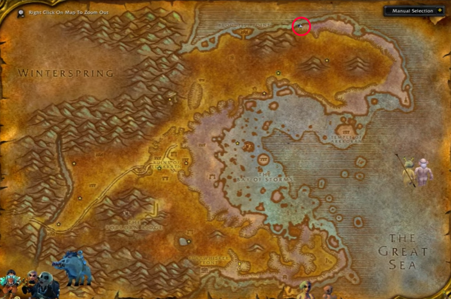
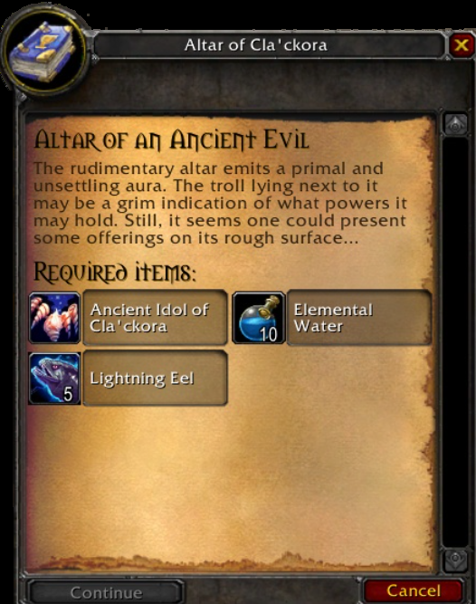
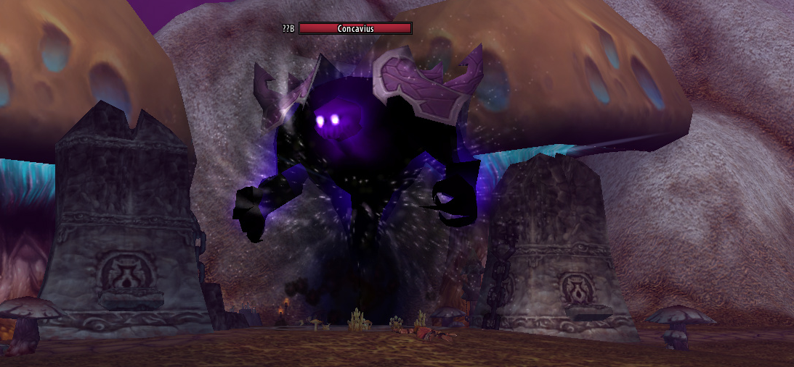
Concavius
Concavius is a voidwalker boss in Shadowbreak Ravine, Desolace. It drops one epic item with minor Shadow Resistance and a bag of valuable trade goods. This is one of the easiest world bosses.
Concavius Abilities:
 Vacuum: Draws all creatures to melee range.
Vacuum: Draws all creatures to melee range.- Mana Burn: AoE that drains mana and fears. Fear Ward has no effect. Can be line-of-sighted.
- Veil of Shadow: At 30% he starts casting this spell which reduces healing taken by 75% and can be decursed.
Strategy
Extremely simple fight. Use the central altar to line-of-sight the Mana Burn. Ensure off-tank is ready to taunt during fear effects.
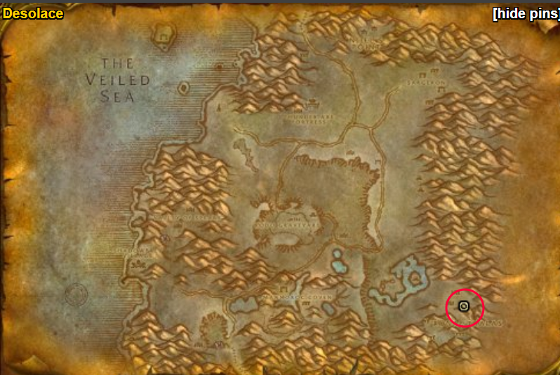
Summoning Concavius
- Loot the Bursting Mana Shard from Moam in AQ20.
- Bring 3x Nexus Crystal to the altar at Concavius’s spawn point and complete the quest.
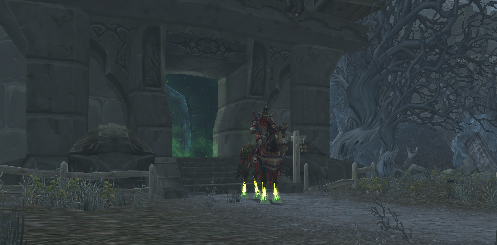
Dark Reaver of Karazhan
The Dark Reaver of Karazhan spawns outside the Karazhan 10-man raid. He drops decent loot, including Arcane Resistance gear. The primary challenge is managing adds. He is undead, meaning you can use your Argent Dawn trinkets.
Dark Reaver Abilities:
- Forlorn Spirits: Periodic adds that must be tanked and killed.
- Class Adds: An additional class-specific add that can only be damaged by that class. Use DPS specs where possible, such as shadow priests, retribution paladins, etc.
- Unbalancing Strike: A debuff reducing tank defense by 100. Use a second tank to tank swap until the debuff runs out.
If a class is present in your raid, it's suggested to have 3 members of that class to kill the class-specific add. Classes not present won't spawn their adds.
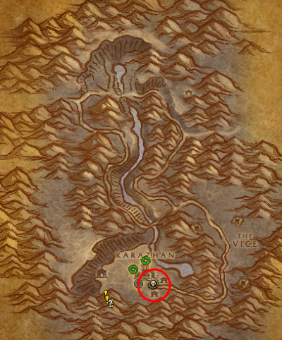
Strategy
The kill priority is Class Adds > General Adds > Boss.
Have all members of the raid stack in melee so that adds can be gathered easily. All DPS should kill the general adds when they appear. Call out which class the current add belongs to and have members of that class kill it immediately.
Swap tanks when Unbalancing Strike is applied to reduce the damage taken.
Summoning the Dark Reaver
- Loot the Lord Blackwald II’s Riding Whistle from Lord Blackwald II in Kara10
- Bring 10x Essence of Undeath to the church behind Karazhan and complete the quest.
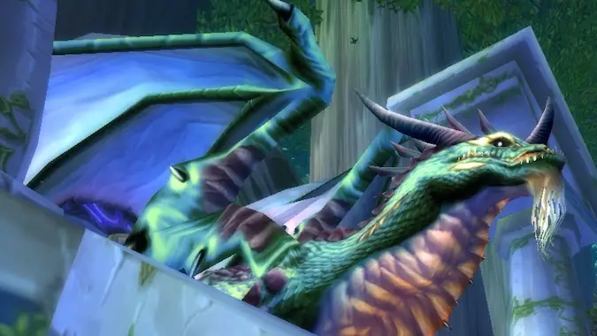
Dragons of Nightmare
Each dragon spawns at one of four possible locations. All four dragons spawn at the same time, but their locations are random and not fixed per dragon. These bosses are a strong source of Nature Resistance gear.
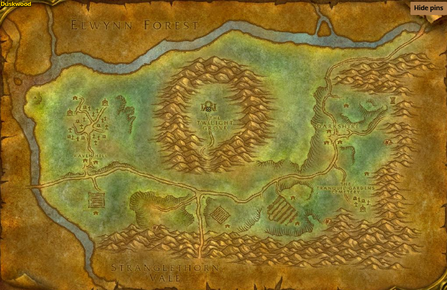
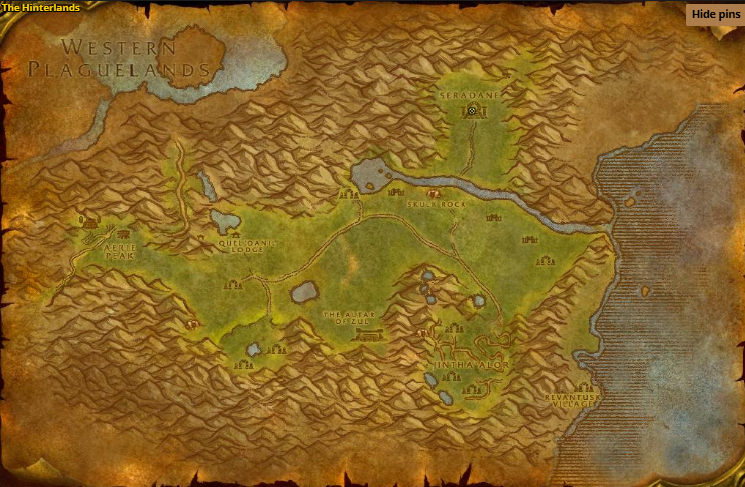
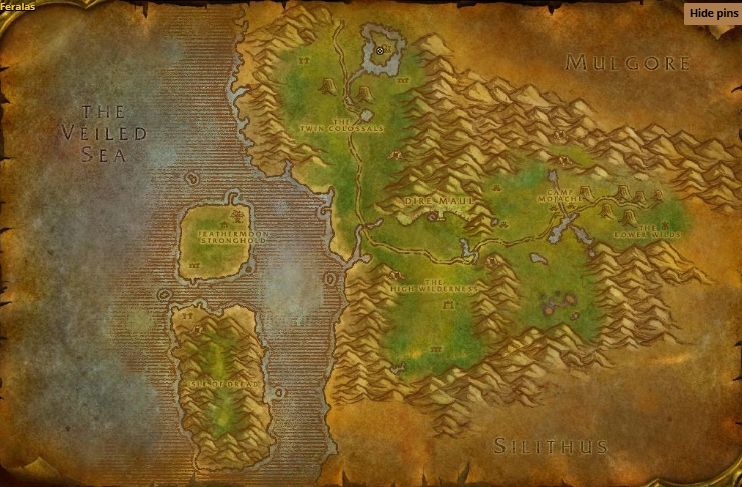
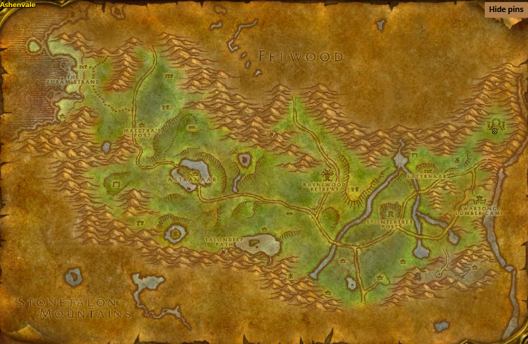
Shared abilities:
- Dream Fog: Two floating green clouds put you to sleep for 5 seconds. Avoid this.
- Immunity: Nature: Dragons of Nightmare are immune to nature damage.
 Mark of Nature: A player who dies will receive a 15-minute debuff that puts them to sleep if they approach a Dragon in combat, preventing them from rejoining the fight.
Mark of Nature: A player who dies will receive a 15-minute debuff that puts them to sleep if they approach a Dragon in combat, preventing them from rejoining the fight.- Noxious Breath: Frontal cone DoT that increases cooldowns by 10 seconds per stack (max 6). Tanks swap at 2-3 stacks.
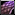
Tail Sweep: Do not stand behind them.
Each dragon uses a unique ability at 75%, 50% and 25% health. Facing the portal, DPS should start the fight behind the left pillar at the bottom of the ramp while the boss is pulled to avoid a Noxious Breath before it is positioned. Tanks position the boss at the right pillar so it is perpendicular to the raid to avoid the group being hit by Noxious Breath and Tail Swipe.
Use a Greater Nature Protection Potion before this fight.
- Lightning Wave: A chain lightning effect that bounces to nearby targets, and with each successive hit, players take more damage. Ranged dps should spread.
Ysondre at 75%, 50% & 25% Health
 Summon Demented Druid Spirits: Ysondre will spawn Demented Druid Spirits for every member in the raid, with 2500 health and the following abilities. DPS should focus on the adds. Everyone should cleanse the debuffs if possible.
Summon Demented Druid Spirits: Ysondre will spawn Demented Druid Spirits for every member in the raid, with 2500 health and the following abilities. DPS should focus on the adds. Everyone should cleanse the debuffs if possible.
- Curse of Thorns: Curses an enemy for 3 minutes, giving them a 50% chance to take 38 to 82 damage on attack.
- Moonfire: Burns the enemy for 195 to 228 Arcane damage and then an additional 384 Arcane damage over 12 sec.
 Silence: Prevents the target from casting spells for 5 seconds.
Silence: Prevents the target from casting spells for 5 seconds.
Use a Greater Shadow Protection Potion before this fight.
You need 3 tanks to coordinate the Shadow Bolt Whirl and the Breath so that the stacks don’t get too high.
- Shadow Bolt Whirl: His feet will glow and he will fire four sets of shadow bolts alternating between his two sides, dealing 800-1200 damage. Tanks will need to face the side he is shooting from away from the raid. DPS will stay in the same position the whole fight. Every 4 shadowbolts, do a tank swap so that he turns 180 degrees, facing the new Shadow Bolt side away from the raid.
Lethon at 75%, 50% & 25% Health
- Draw Spirit: Anyone within 100 yards of Lethon is stunned for 5 seconds, taking shadow damage every 2 seconds, and a Spirit Shade will emerge from their body. The Spirit Shades will walk toward Lethon and heal him for ~15000 health if they reach him. They have ~500 health each and are immune to AoE spells.
- The simplest approach is to ignore the Spirit Shades. Let him heal back to full at each checkpoint, then DPS him down again. The alternative is to have melee run out before the cast, then have everyone single target their shade to kill them before they reach the boss.
- Ensure everyone is topped up before this ability. Healers should do big AOE healing when the stun ends.
The main tanks should have their backs to the pillar in case of knockback. Ranged should stay at max range to avoid fear. Three tanks must be prepared to grab the Shades when they appear and face them away from the raid to avoid the Breath and Tail Swipe.
 Arcane Blast: A single-target knockback that deals 1000-1350 Arcane damage.
Arcane Blast: A single-target knockback that deals 1000-1350 Arcane damage.- Bellowing Roar: A group fear for everyone within 30 yards, every 30 seconds.
Taerar at 75%, 50% & 25% Health
- Summon Shade of Taerar: Taerar will banish himself and summon three Shades. Tanks should each pick up a Shade while the raid DPSes them down. Each shade has a weaker breath attack as well as a poisonous cloud around their feet.
Use a Greater Shadow Protection Potion before this fight.
- Spore Cloud: When a player dies they transform into a poisonous mushroom which deals massive, constant damage. Avoid at all costs. If there are multiple mushrooms it is likely a wipe.
- Volatile Infection: A disease that inflicts nature damage to the target and nearby allies. Cleanse it.
Emeriss at 75%, 50% & 25% Health:
- Corruption of the Earth: Reduces raid health by 20% every 2 seconds for 10 seconds. Players should use a Healthstone, major healing potion, or Greater Shadow Protection Potion, or apply defensives (e.g., Bulwark of the Righteous) during each damage period. Druids should coordinate Tranquility casts.
- Priests should avoid applying Prayer of Fortitude, as it increases healing requirements and mana usage. The raid can stack in melee, and priests may place Lightwells there.
Summoning the Green Dragons
- Loot the Wail of Ysera from the Favor of Erennius in Emerald Sanctum (Hard Mode)
- Collect 10x Bright Dream Shard
- Hand in the quest at the Stone of Dreams at one of the following locations, depending on which dragon you want to summon:
- Ashenvale: Lethon
- Feralas: Ysondre
- Duskwood: Taerar
- Hinterlands: Emeriss
The Stone of Dreams is found in front of the portals where the dragons normally spawn.
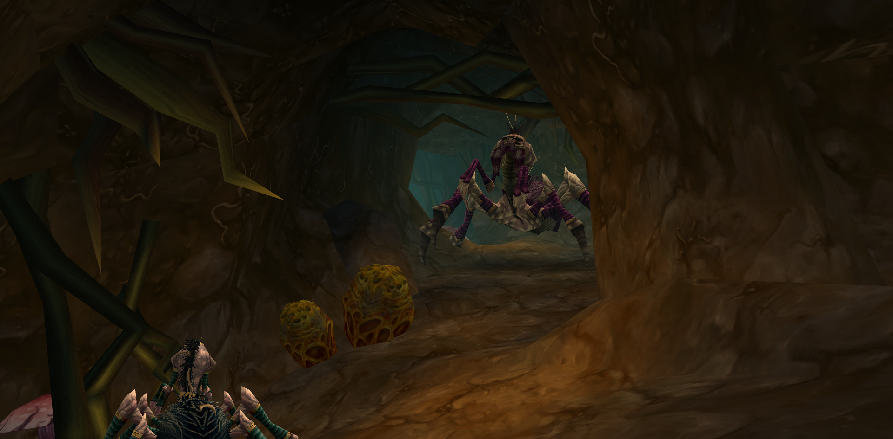
Nerubian Overseer
The Nerubian Overseer wanders the Terrorweb Tunnel in Eastern Plaguelands. The encounter revolves around dispels, positioning, and correctly handling his web wrap mechanic.
- Web Wrap: Periodically targets the furthest player from the boss. After approximately 7–8 seconds, the target is wrapped in a web and dies. If a player dies, multiple spiderling adds spawn from their corpse which apply a massive healing reduction to their targets.
- Poison/Disease: Periodic DoT application to raid members. Cleansing is top priority.
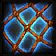
Poison Cloud: Periodically drops poison clouds beneath random players dealing heavy damage. Must be moved out of.- Web: A regular web cast on random raid members. Removable with Hand of Freedom or similar. Minimal impact with correct positioning but problematic if adds spawn.
Web Wrap targets the furthest player from the boss and kills them after approximately 7-8 seconds. Designate several paladins and mages as soakers, forming a line behind the ranged group. The furthest player pre-casts their immunity as Web Wrap is incoming. Divine Shield or Ice Block must be active before the debuff lands, as you cannot cast them in reaction to it. After absorbing the debuff, the soaker walks forward through the line and the next soaker steps to the back. Ensure you are in combat before having to soak.
Maintain an aggressive dispel rotation on poison/disease and kill any adds that spawn immediately.
Summoning Nerubian Overseer
- Loot the Crypt Lord's Beckoning from Anub’Rekhan in Naxxramas.
- Get 10x Hallowed Cross from Scarlet Crusade elites in Tyr’s Hand.
- Hand in the quest to Tirion Fordring in the Western Plaguelands.
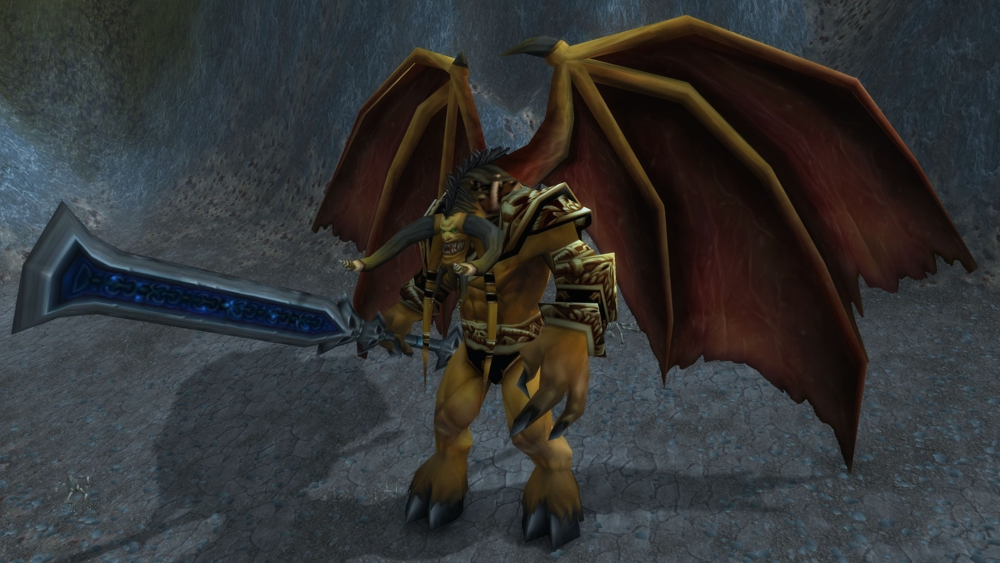
Lord Kazzak
Lord Kazzak is a doomlord located in the south-western edge of the Blasted Lands in the Tainted Scar. Kazzak commands the Burning Legion forces stranded after the Third War, following the Legion's defeat at Mount Hyjal. Unlike most demon commanders, Kazzak relishes direct combat and wields Archimonde's greatsword. His sole purpose is reopening the Dark Portal to escape back to Outland.
Lord Kazzak Abilities:
 Capture Soul: Upon a player death Lord Kazzak will heal for 70,000+ health
Capture Soul: Upon a player death Lord Kazzak will heal for 70,000+ health- Cleave: Frontal cleave. Tanks only in front.
 Mark of Kazzak: Targets a caster to lose mana over time, if they get to 0 mana, they explode for 6,000 damage. Can be dispelled
Mark of Kazzak: Targets a caster to lose mana over time, if they get to 0 mana, they explode for 6,000 damage. Can be dispelled- Shadow Bolt Volley: AoE shadow bolts, ignores LoS
- Thunderclap: damages and slows attack speed and movement of targets
- Twisted Reflection: heals Lord Kazzak for 25,000 if he hits a player afflicted with it; can be dispelled
 Void Bolt: Powerful single target shadow spell.
Void Bolt: Powerful single target shadow spell.
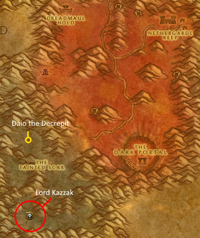
Players must kill him in under 3 minutes or he becomes enraged.
Unless you're a tank, avoid standing in front of him. Decurse Twisted Reflection as a priority. If a caster has Mark of Kazzak and uses all their mana, they'll turn into a bomb. Dispel this immediately, and have mana users keep a close watch on their mana pool.
Summoning Lord Kazzak
- Loot the Twisting Rift Crystal from Majordomo Executus’s chest in Molten Core.
- Get 10x Netherrich Demon Blood from demons in the Blasted Lands or Winterspring.
- Hand in the quest to the Daio the Decrepit in the Blasted Lands.
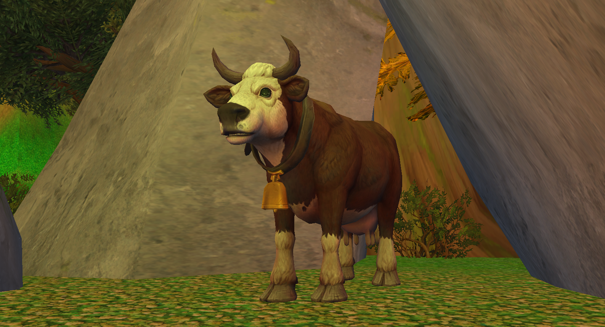
Moo
Moo is found in Moomoo Grove, which can only be accessed by completing the obscure quest line. Warlocks can no longer summon un-attuned people into Moomoo Grove.
Fire, Frost, and Shadow Protection potions are useful here. Frost resistance gear can reduce incoming damage significantly. Despite being in a unique zone it is possible to use World Buffs for this boss.
Moo Abilities:
- Frost Bolt Volley and
 Shadow Bolt Volley: Damages all members of the raid.
Shadow Bolt Volley: Damages all members of the raid. - Firebolt: Cast periodically on the tank.
- Charge: Charges random people, knocking them down, then returns to the tank. He will not charge targets in melee range.
How to find Moo
- Kill Cows in Elwynn Forest until you find a Mysterious Cow Scroll (1-2% drop). Accept Mysterious Cow Scroll I.
- First clue: In the barn at the Brackwell Pumpkin Patch in Elwynn Forest.
- Second clue: In the Gold Coast Quarry (Westfall), in a pile of dirt in the cave.
- Third clue: In a grave at Raven Hill in Duskwood.
- Fourth clue: On the north-west coast of Stranglethorn Vale.
- Final clue: In a burned down hut in the Serpents Coil in Blasted Lands.
- Before handing in the quest you will need to find a Cow King’s Hide and Wirt’s Third Leg. The pirates in Tanaris drop the Leg.
- Find Bessy at Heroes Vigil in Elwynn Forest. Hand in the rare items and the Scroll of Cow Portal received from following the clues. She teleports you to Moomoo Grove.
- Speak with Moo to begin the fight.
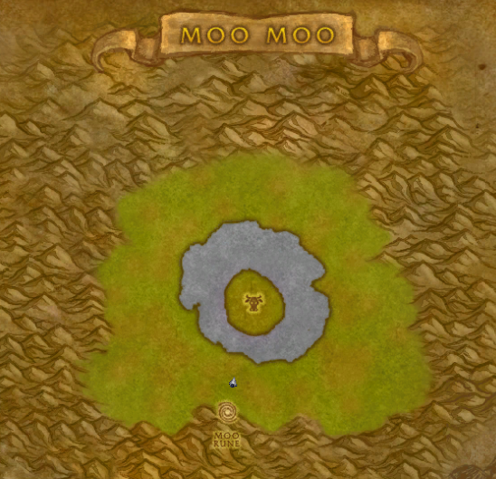
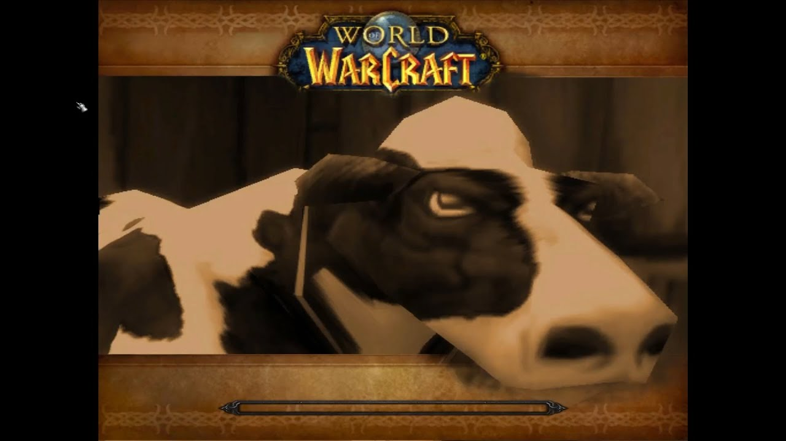
This is the route I used to farm the cows. The cow by the gardening house outside Stormwind respawns every 30 seconds.
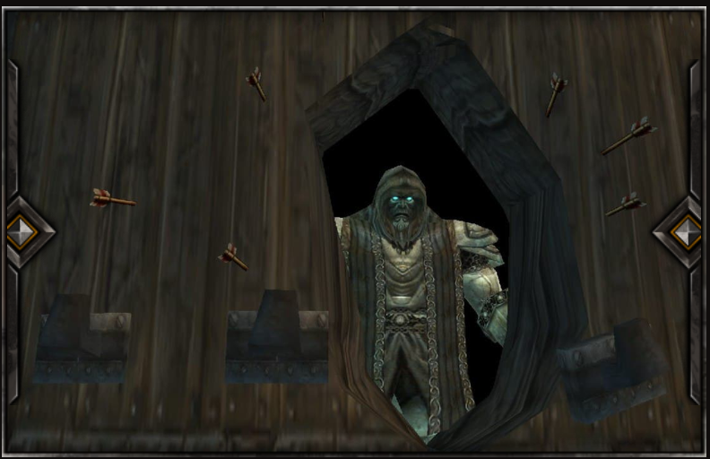
Ostarius
Ostarius is an ancient Titan construct guarding the sealed gates of Uldum in southern Tanaris. Designed to protect the Titans' deepest secrets, Ostarius has stood vigil for millennia and will obliterate any who trespass.
This is a three-phase encounter with phase transitions at 50% and 30% health. The fight takes place in an area with level 47+ elite wandering stone giants.
Ostarius Mechanics:
Phase 1: 100% - 50% Health
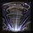
Shield: High damage AoE around boss, who remains stationary. Requires heavy tank healing.- Teleport: Pulls a nearby player into his AOE if there is nobody in melee range. A tank must stay at his feet to avoid this.
- Portals: Spawn around the arena and summon adds. Melee DPS close portals with a 5 second interact. Close quickly to prevent adds.
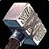
Portal Adds: Cast single-target stuns and frontal cone fire. Melee stun and kite adds away from portals. Ranged kill adds while damaging boss. Can be banished.
Phase 2: 50% - 30% Health
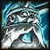
Dwarven Guardians: Stationary constructs spawn at arena edges. Cannot be targeted or damaged.- Rain of Fire: Ground-targeted fire damage from guardians. Dodge them.
- Frost Breath: Frontal cone attack from guardians. Stay clear of their facing directions.
Portals and adds continue. Ranged focus boss while avoiding abilities and ground effects.
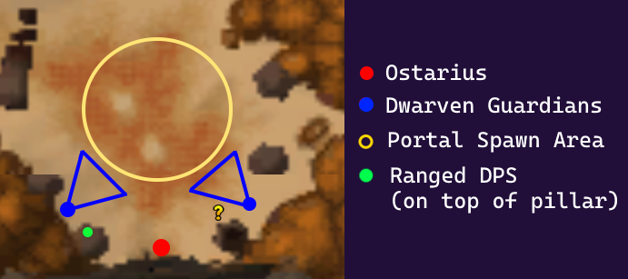
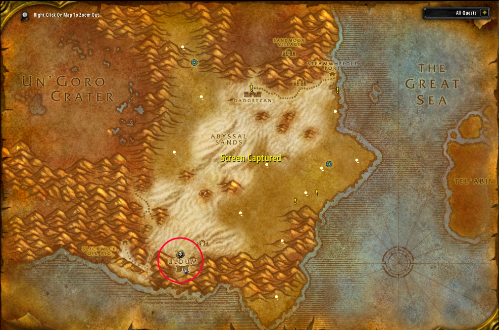
Phase 3: 30% - 0% Health
- Burn Phase: All DPS attack Ostarius. The shield spell ends, but Rain of Fire and Frost Breath continue. Dodge ground effects and kill the boss.
- Silence: An AOE silence that can be dispelled (magic).
Summoning Ostarius
- Get the quest Unusual Partnership from High Explorer Magellas in the Ironforge Hall of Explorers.
- Hand the quest in at Vess in Booty Bay, inside the Inn. Pick up Original Owner.
- Go to Jaguero Isle, east of Booty Bay. Kill Bannor on the east side of the island and loot the quest item. Return to Vess and pick up What Lurks in the Dark.
- Return to High Explorer Magellas in Ironforge and pick up The Race.
- Go to Ungoro Crater and find the Pedestal in the mountains to the north, east of Marshal’s Refuge.
- Kill 6 Stone Guardians (60-61 Elite) wandering Ungoro, then return to High Explorer Magellas in Ironforge. Pick up The Missing Expedition.
- Turn in the quest in the south-east of Swamp of Sorrows. Pick up Pride of the Dwarves.
- Go north of the lake and kill the group of cultists. Loot the Second Plate of Uldum and return to High Explorer Magellas in Ironforge. Pick up Gates of Uldum.
- Travel to the Ostarius spawn point. Hand in the quest at the pedestal and pick up Gate Keeper, which can only be handed in when the boss is spawnable. Taking this quest spawns Ostarius.
You can only pick up the final quest if Ostarius is within his spawn window. He has been spotted outside of this known spawn window but the exact mechanism isn’t clear.
Note: Once you complete the quest to kill Ostarius, you permanently lose the ability to summon him. If you instead delete the quest after killing him you can pick it up again at the Pedestal and summon him again next time.
Ostarius Respawn
Ostarius resets fortnightly, straight after server reset, and possibly a second time during the week (unconfirmed). The pedestal that summons Ostarius has three interaction states. While the options change, there is no meaningful difference between state 1 and state 2. Ostarius will not spawn early based on pedestal state. He only becomes available at his fixed, predictable spawn time. Because of this, the only state that actually matters is whether the quest hand in is available.
State 1: You could swear its humming: This is the earliest and most common state.
State 2: The pedestal is recharging: This is a rarer state. It may appear within a certain time frame [Unverified]. It reverts back to stage 1.
State 3: Hand in available: This means the quest is ready to hand in and the boss is spawnable.
A separate quest picked up at the end of the Uldaman dungeon also leads to this pedestal. If completed, the pedestal gains an additional dialogue option to Summon Stone Watcher, which summons a holographic creature for lore dialogue. This interaction is completely unrelated to Ostarius. It does not affect spawning in any way.
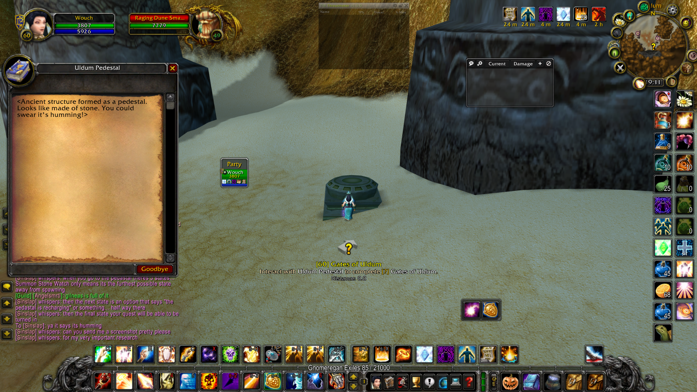
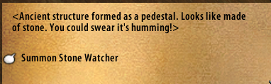
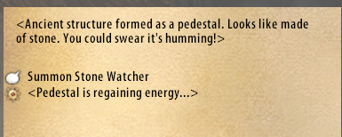
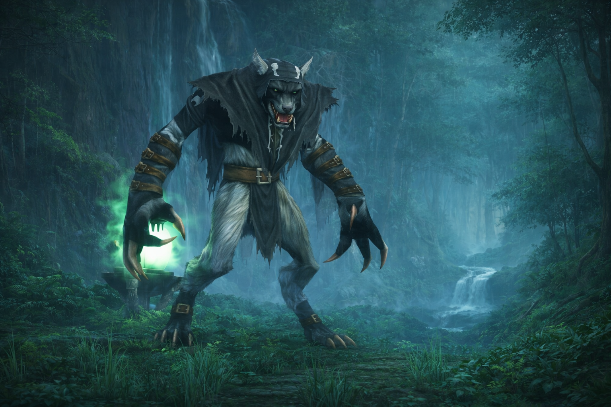
Father Lycan
Father Lycan is a worgen pricolich and bloodmage from Vorgendor who taught the Harlow family blood magic, corrupting Gilneas’ nobility. He is summoned at the Circle of Power in Hyjal. His death facilitates the cleansing of the Scythe of Elune.
Phase 1:
 Doombolt: ~18000 shadow damage. Must be interrupted.
Doombolt: ~18000 shadow damage. Must be interrupted.- Worgen Adds: Two portals, one on each side of the lake, constantly spawn a large number of Worgen with 12500 health each.
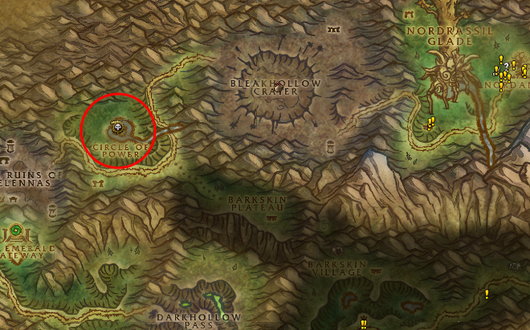
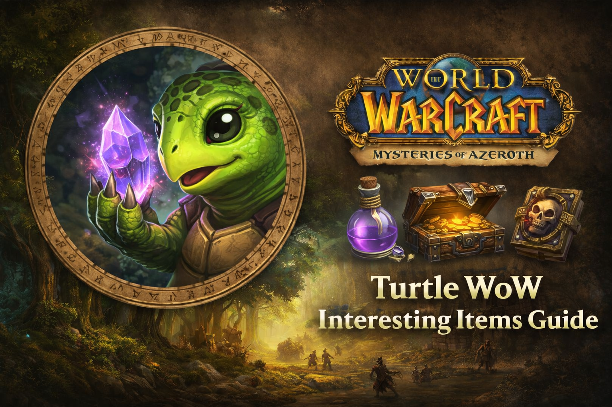
- ★ Reflect: Items that deal automatic damage back to attackers when you are hit or block.
- ★ Chance When Struck: Items that trigger an effect when you take damage or block an attack.
- ★ X to your Attacks: Items that add flat damage to every attack you make.
- ★ Vampirism: Items that restore health based when you deal damage.
- ★ Beast Slaying: Items that deal additional damage to beasts.
- ★ Swim Speed: Items that increase your swimming speed.
- ★ Mount Speed: Items that increase your mounted speed.
- ★ Fishing Items: Items that increase your fishing skill.
- ★ Water Breathing: Items that allow you to breathe underwater.
- ★ Stealth Level: Items that decrease the chance you will be seen in stealth.
- ★ Stealth Detection: Items that increase the chance to see through stealth.
- ★ High Armor Items: WIP
- ★ Block Chance Items: WIP
| Item | Damage | Found |
|---|---|---|
| Electromagnetic Gigaflux Reactivator | 5 Nature (10 min buff) | Gnomeregan: Mekgineer Thermaplugg |
| Item | Damage | Found |
|---|---|---|
| Talisman of Binding Shard | 4 Nature | Molten Core: Garr |
| Item | Damage | Found |
|---|---|---|
| Cloak of Flames | 5 Fire | Raid BOE |
| Razorskin Cape | 3 Nature | Stormwrought Descent: Eldermaw the Primordial |
| Woven Ivy Cloak | 1 Nature | Quest: Bring Down the Priestess! |
| Item | Type | Damage | Found |
|---|---|---|---|
| Spiked Defias Spaulders | 1 Arcane | Deadmines: Edwin Van Cleef |
| Item | Type | Damage | Found |
|---|---|---|---|
| Razor Gauntlets | Plate | 3 Arcane | Dire Maul: East: Alzzin the Wildshaper |
| Item | Damage | Found |
|---|---|---|
| Blackthorn Band | 4 Nature | Black Morass: Mossheart |
| Naglering | 3 Arcane | Blackrock Depths: Golem Lord Argelmach |
| Band of Thorns | 1 Nature | World Drop |
| Item | Damage | Found |
|---|---|---|
| Essence of the Pure Flame | 13 Fire | Molten Core: Ragnaros |
| Horn of Engryss | 4 Nature | The Crescent Grove: Grovetender Engryss |
| Lasher’s Whip | 4 Nature | Emerald Sanctum: Trash |
| Seed of Writhing Growth | 3 Nature | Razorfen Kraul: Rotthorn |
| Mossheart’s Heart | 1 Nature | Black Morass: Mossheart |
| Item | Damage | Found |
|---|---|---|
| Sulfuras, Hand of Ragnaros | 5 Fire | Blacksmithing / Legendary |
| Thornclad Warhammer | 3 Nature | Maraudon: Trash Mobs |
| Flame Wrath | 10 Fire | Blackrock Depths: Ambassador Flamelash (25%) (.01%) |
| Item | Damage | Found |
|---|---|---|
| Sulfuron Aegis | 4 Fire | Molten Core: Basalthar & Smoldaris/Sorcerer-Thane Thaurissan (16.67%) |
| Drillborer Disk | 3 Arcane | Molten Core: Garr (17%) |
| Crest of Retribution | 5–35 Physical | Stratholme (Undead): Ramstein the Gorger (14%) |
| The Green Tower | 3 Nature | BOE: World drop |
| Bristlehide Buckler | 1 Nature | Mulgore: Chief Sharptusk Thornmantle (3%), Bristleback Shaman (0.02%), Bristleback Quilboar (0.02%) |
| Technician's Servoshield | 1 Arcane | Razzle Longpipe (Horde Only Vendor) |
| Barnacle Targe | 1 Nature | Blackstone Island: The Snipper Rare (50%) |
| Iron Shield Spike | 11-18 Physical | Blacksmithing [150] |
| Mithril Shield Spike | 16-20 Physical | Blacksmithing: [215] |
| Thorium Shield Spike | 20-30 Physical | Blacksmithing: [275] |
Reflect Buffs
| Item | Type | When Struck | Found |
|---|---|---|---|
| Icemail Jerkin | Chance to freeze the attacker in place for 3 sec. | World Drop |
| Item | Type | When Struck | Found |
|---|---|---|---|
| Pauldron of Deflection | Plate | 2% chance to return with a counterattack. | Blacksmithing |
| Item | Type | When Struck | Found |
|---|---|---|---|
| Iceplated Leggings | Leather | 10% chance to deal 35 to 44 Frost damage and slow the attacker’s attack and movement speed by 5% for 12 sec, stacking up to 5 times. | Azshara: Cla’ckora (World Boss) |
| Item | When Struck | Found |
|---|---|---|
| Freezing Band | 1% chance to deal 50 Frost damage to the attacker and freeze them for 5 sec. | World Drop |
| Item | When Struck | Found |
|---|---|---|
| Crest of Retribution | When the shield blocks, damage the attacker for 5-35 Physical damage. | Stratholme: Ramstein the Gorger (14%) |
| Force Reactive Disk | When the shield blocks, damage all nearby enemies for 25-35 Nature damage. | Engineering [300] |
| Skullflame Shield | 3% chance to steal 35 life from the attacker. 1% chance to deal 75 to 125 Fire damage to all nearby enemies. | World Drop |
| The Green Tower | 1% chance to gain a shield dealing 3 Nature damage to attackers and granting 50 Nature resistance for 30 sec. | World Drop |
| Wall of the Dead | 3% chance to increase armor by 150 for 20 sec. | World Drop |
| Grand Marshall’s Aegis | 5% chance to deal 35-65 Nature damage to the attacker. | Rank 14 Honor |
| Item | Adds | Found |
|---|---|---|
| Blazefury Medallion | 2 Fire | Blasted Lands: Lord Kazzak (World Boss) (20%) |
| Item | Adds | Found |
|---|---|---|
| Incendosaur Skin Pauldrons | 2 Fire | Hateforge Quarry: Outside Instance Elites (0.01%) |
| Item | Adds | Found |
|---|---|---|
| Thunder Lizard’s Hide | 3 Nature | Razzle Longpipe (Horde Only Vendor) Cost: 7g 50s |
| Item | Type | Adds | Found |
|---|---|---|---|
| Gahz'rilla Scale Armor | 3 Nature | Zul’Farrak: Gahz’rilla (50%) | |
| Lavadrenched Chainmail | 2 Fire | Ragefire Chasm: Bazzalan (30%) |
| Item | Type | Adds | Found |
|---|---|---|---|
| Flameskin Gloves | Leather | 2 Fire | Ashenvale: Akkrilus (Rare) (75%) |
| Incendosaur Skin Gloves | Leather | 2 Fire | Hateforge Quarry Trash Mobs: (0.005%) |
| Item | Type | Adds | Found |
|---|---|---|---|
| Leggings of Fiery Temper | Leather | 2 Fire | Stonetalon Mountains: Blazespark (Rare) (50%) |
| Item | Type | Adds | Found |
|---|---|---|---|
| Incendosaur Skin Boots | Leather | 2 Fire | Hateforge Quarry: High Foreman Bargul Blackhammer (20%) |
| Item | Adds | Found |
|---|---|---|
| Ring of Electrical Binding | 3 Nature | Gilneas City: Dustivan Blackcowl (25%) |
| Sizzling Pyrestone Aureole | 2 Fire | Molten Core: Incindis (20%) |
| Item | Type | Adds | Found |
|---|---|---|---|
| Flamestring Bow | Bow | 4 Fire | Western Plaguelands: Narillasanz (Rare) (33%) |
| Fist of the Flamewaker | Fist Weapon Off-Hand | 4 Fire | Molten Core: Incindis (20%) |
| Item | Adds | Found |
|---|---|---|
| Repaired Electro-Lantern | 3 Nature | Survival [90] |
| Item | Type | Adds | Found |
|---|---|---|---|
| Judgement Battlegear/Battle Plate (Set; Protection, Retribution) | Paladin | 3 Holy | 3 set bonus, Stacks with either set |
| Item | Adds | Found |
|---|---|---|
| Dreadslayer Horns | 3% | Upper Karazhan Halls: Sanv Tas’dal (14%) |
| Item | Type | Adds | Found |
|---|---|---|---|
| Dreamhide Mantle (Leatherworking: 300) | Leather | 1% | Emerald Sanctum: Solnius the Awakener Pattern: Dreamhide Mantle (4%) |
| Item | Adds | Found |
|---|---|---|
| Venom Covered Cloak | 2% | World Boss: Nerubian Overseer (20%) |
| Battlescarred Cloak | 1% | Lower Karazhan Halls: Grizikil (14%) |
| Item | Type | Adds | Found |
|---|---|---|---|
| Jinxed Hoodoo Skin | Leather | 3% | Zul’farrak: Shadowpriest Sezz'ziz (25%) |
| Vest of Encroaching Darkness | Cloth | 2% | Lower Karazhan Halls: Moroes (10%) |
| Raiments Of Transcendence (Priest: Shadow) | Cloth | 1% | Blackwing Lair: Nefarion (11%) |
| Blood-tinged Armor | 1% | Quest: Trol’kalar Horde Only |
| Item | Type | Adds | Found |
|---|---|---|---|
| Aquis’ Bindings | 1% | Gillijim’s Isle: Aquitus (Rare) (20%) | |
| Barkskin Elder Cuffs | Cloth | 1% | Quest: The Corruption of the Barkskin Tribe |
| Item | Type | Adds | Found |
|---|---|---|---|
| Blackthorn Gauntlets | Leather | 2% | Quest: Genn Greymane Must Die! Horde Only |
| Item | Type | Adds | Found |
|---|---|---|---|
| Sash of Transcendence (Priest: Shadow) | Cloth | 1% | Blackwing Lair: Vaelastrasz the Corrupt (11%) |
| Blackcowl Sash | Leather | 1% | Gilneas City: Dustivan Blackcowl (25%) |
| Item | Type | Adds | Found |
|---|---|---|---|
| Shadeweave Boots | Cloth | 1% | Lower Karazhan Halls: Clawlord Howlfang (20%) |
| Item | Adds | Found |
|---|---|---|
| Darkmoon Ring | 2% | Vendor: Darkmoon Faire (Elwynn Forest/Mulgore) Cost: 5g |
| Twilight Opal Cascade | 2% | Jewelcrafting [300] |
| Item | Adds | Found |
|---|---|---|
| Grail of Forgotten Memories | 3% | Jewelcrafting: Goldsmithing [300] |
| Blood-etched Fetish | 2% | Razorfen Downs: Death Prophet Rakameg (25%) |
| Tooth of the Packlord | 2% | Karazhan 10: Clawlord Howlfang |
| Item | Type | Adds | Found |
|---|---|---|---|
| Leeching Fang | Dagger Off-Hand | 2% | Caverns of Time: Black Morass Trash Mobs (0.0006%-0.0031%) |
| Vampiric Kris | Dagger | 2% | Lower Karazhan Halls: Brood Queen Araxxna (14%) |
| Wolfblood | 2H Sword | 2% | Gilneas City: Genn Greymane (15%) |
| Bloodstone Warblade | 2H Sword | 2% | Vendor: Bind on Pickup Blacksmithing: (Plans: Bloodstone Warblade) |
| Stagwood Grasp | Fist Weapon Off-Hand | 1% | Quest: Stagwood Grasp 150 Bright Dream Shards |
| Bloodfang Effigy | Wand | 1% | Lower Karazhan Halls: Lord Blackwald II (14%) |
| Bloodstained Fangblade | Dagger | 1% | Zul’Farrak: Zel’Jeb the Ancient (25%) |
| Item | Type | Adds | Found |
|---|---|---|---|
| Glowing Ruby Gemstone | Gem | 1% | Jewelcrafting [200] |
| Enchant Bracer: Vampirism |  Enchant Enchant | 1% | Enchanting [185] |
| Enchant Boots: Vampirism | Enchant | 1% | Enchanting [300] |
| Enchant Weapon: Lifestealing |  Enchant Enchant | 30hp | Enchanting [300] |
| Sigil of Leeching | Enchant | 2% | Hyjal Shoulder Enchant - 5 Bright Dream Shard / 1 Fading Dream Fragment |
| Item | Slot | AP | Found |
|---|---|---|---|
| Loksey’s Training Stick | Weapon (Staff) | 60 | Houndmaster Loksey - SM |
| Dog Training Gloves | Hands - Leather | 30 | Houndmaster Loksey - SM |
| The Golden Banana | Trinket | 60 | Highvale Silverback - Telabim (Rare) |
| Crochide Wrists | Bracers - Leather | 48 | Black Morass - Trash - BOE |
| Beastsmasher | Weapon (1h Mace) | 30 | Quest: The Mighty U’cha |
| Beastslayer | Weapon (2h Axe) | 72 | Quest: The Mighty U’cha |
| Halycon’s Spiked Collar | Neck | 48 | Halycon (LBRS) |
| Finkle’s Skinner | Weapon (Dagger) | 45 | The Beast (UBRS) |
| Beasthunter’s Blunderbuss | Weapon (Gun) | 39 | Clawlord Howlfang (Kara10) |
| Beasthunter Dagger | Weapon (Dagger) | 33 | Quest: Shy-Rotam (Horde Only) |
| Beaststalker Blade | Weapon (1h Sword) | 33 | Quest: Shy-Rotam (Horde Only) |
| Raptorbane Armor | Chest (Leather) | 30 | Ormer’s Revenge |
| Houndmaster’s Bow | Weapon (Bow) | 24 | Houndmaster Grebmar - BRD |
| Houndmaster’s Rifle | Weapon (Gun) | 24 | Houndmaster Grebmar - BRD |
| Tigerbane | Weapon (Dagger) | 18 | World Drop |
| Wildhunter Cloak | Back | 18 | Quest: The Hunt Completed (Horde Only) |
| Creeper Fang Necklace | Neck | 15 | Quest: The Hunt for Heketh (Horde Only) |
| Item | Slot | Speed | Found |
|---|---|---|---|
| Idol of Fluidity | Idol (Druid) | 20% in Aquatic Form | Gnaws (Rare) |
| Azure Silk Belt | Belt | 15% | Tailoring [175] |
| Captain’s Overcoat | Chest | 15% | Bloodsail Buccaneer Reputation (Revered) |
| Deep Striders | Boots | 15% | Blackfathom Depths: Gelihast |
| Ice Pearl of Kaneq’nuun | Trinket | 15% | Quest: The Legend of Tarqsiku |
| Ocean’s Gaze | Ring | 15% | Jewelcrafting [190] |
| Rethress Tide Crest | Trinket | 15% | Quest: Killing the Tide Lord |
| Triskelion of Roving Elements | Trinket | 8% | Quest: An Honorary Gelkis (Requires Honored with Gelkis Clan Centaur) |
| Primal Batskin Set | Set Bonus | 8% | Leatherworking [300] |
| Item | Speed | Found |
|---|---|---|
| Hook of the Master Angler | 25% (transforms you into a fish) | Stranglethorn Fishing Extravaganza: Master Angler |
| Swim Speed Potion | 100% | Alchemy [100] |
| Fluidity Potion | 100% (only in Balor) | Vendor: Elindra Swiftluck |
| Torta (Mount) | 15% | Quest: Torta’s Egg |
| Item | Slot | Speed | Found |
|---|---|---|---|
| Formula: Enchant Gloves - Riding Skill |  Enchant Enchant | 2% | Enchanting [250] |
| Carrot on a Stick | Trinket | 3% | Quest: Gahz’rilla |
| Whip of Encouragement | Trinket | 3% | Stormwind Vaults: Vault Armory Equipment |
| Goblin Car Key | Trinket | 3% | Daily Quest: Mirage Raceway: Goblin’s Team |
| Gnome Car Key | Trinket | 3% | Daily Quest: Mirage Raceway: Gnome’s Team |
| Thorium Spurs | Spur | 8% | Blacksmithing [235] |
| Mithril Spurs | Spur | 4% | Blacksmithing [275] |
| Boots of the Slime Path | Boots (Mail) | 3% | Stormwrought Descent: Trash Mobs |
Fishing Poles
| Item | Bonus | Found |
|---|---|---|
| Blump Family Fishing Pole | +3 | Quest: The Family and the Fishing Pole |
| Strong Fishing Pole | +5 | Fishing Vendors |
| Darkwood Fishing Pole | +15 | Redridge Mountains, Hillsbrad Foothills: Fishing (0.02%) |
| Big Iron Fishing Pole | +20 | Desolace: Shellfish Trap (1.5%) |
| Nat Pagle's Extreme Angler FC-5000 | +25 | Quest: Snapjaws, Mon! (Horde Only) |
| Barkskin Fisher | +30 | Hyjal: Barkskin Fisher (Rare) |
| Arcanite Fishing Pole | +35 | Stranglethorn Fishing Extravaganza: Master Angler |
Other Items
| Item | Bonus | Found |
|---|---|---|
| Lucky Fishing Hat | +5 | Quest: Rare Fish - Keefer's Angelfish |
| Undercity Bucket Hat | +5 | Undercity: Fishing (0.5%) |
| Nat Pagle's Extreme Anglin' Boots | +5 | Quest: Rare Fish - Brownell’s Blue Striped Racer |
| High Test Eternium Fishing Line | +5 | Quest: Rare Fish - Dezian Queenfish |
| Formula: Enchant Gloves - Fishing | +2 | Hillsbrad Foothills: Random drop from Murlocs (2%) |
| Fishing Boat | +50 | Survival [75] - Lasts 1 hour |
| Item | Found |
|---|---|
| Hydrocane | Viscous Fallout (Gnomeregan) |
| Band of Icy Depths | Quest: The Wrath of Neptulon (Raid) |
| Deepdive Helmet | Engineering [230] |
| Pearlescent Shard | Quest: Calming the Tempest |
| Swashbuckler Captain’s Hat | Bloodsail Buccaneer Reputation (Exalted) |
| Raider Captain’s Hat | |
| Pillager Captain’s Hat | |
| Enforcer Captain’s Hat | |
| Depthstalker Helm | Leatherworking [300] |
| Item | Slot | Found |
|---|---|---|
| X-52 Stealth Ocular Implants | Head | Quest: The First Opening of The Dark portal |
| Blackened Defias Mask | Head | Deadmines: Mr Smite |
| Amber Shawl | Back | Quest: An Amber Light (Alliance Only) |
| Cloak of the Dark Veil | Back | Gilneas City - Dustivan Blackcowl |
| Quel’dorei Assassins Boots | Boots | Silvermoon Remnant Reputation (Revered) |
| Revantusk Stalker’s Boots | Boots | Revantusk Trolls Reputation (Revered) |
| Lightfooted Mokassins | Boots | Quest: Stinging Lullaby (Alliance Only) |
| Whisperwalk Boots | Boots | Quest: The Azure Key (Rogue Only) |
| Nightscape Boots | Boots | Leatherworking [255] |
| Whispershard Ring | Ring | Stormwrought Descent: Trash Mobs |
| Eye of the Forgotten Depths | Trinket | Stormwrought Descent: Trash Mobs |
| Formula: Enchant Cloak - Stealth | Enchant | Enchanting [300] |
| Item | Slot | Found |
|---|---|---|
| Catseye Ultra Goggles | Head | Engineering [240] |
| Bloodvine Lens | Head | Engineering [300] |
| The Night Watchmen | Head | World Drop (Level ~40) |
| Sightless Leather Hood | Head | Stormwind Vaults: Black Bride |
| General's / Marshal's Dragonhide Gloves | Gloves | Rank 12 Honor - Druids |
| Knight Lieutenant’s / Blood Guard’s Dragonhide Gauntlets | Gloves | Rank 7 Honor - Druids |
| Dyad of Twitching Elven Ears | Trinket | Quest: One of Us (Requires honoured with Magram Clan Centaur) |
| Glowing Wax Stick | Use | Quest: Kobold Candles (Alliance Only) |
| Item | Armor | Found |
|---|---|---|
| Item | Armor | Found |
|---|---|---|
| Item | Armor | Found |
|---|---|---|
| Item | Type | Damage | Found |
|---|---|---|---|
| Item | Type | Damage | Found |
|---|---|---|---|
| Item | Armor | Found |
|---|---|---|
| Item | Armor | Found |
|---|---|---|
| Item | Armor | Found |
|---|---|---|
| Item | Armor | Found |
|---|---|---|
| Item | Block % | Found |
|---|---|---|
| Item | Block % | Found |
|---|---|---|
| Item | Block % | Found |
|---|---|---|
| Item | Block % | Found | Found |
|---|---|---|---|
| Item | Block % | Found | Found |
|---|---|---|---|
| Item | Block % | Found |
|---|---|---|
| Item | Block % | Found |
|---|---|---|
| Item | Block % | Found |
|---|---|---|
| Item | Block % | Found |
|---|---|---|